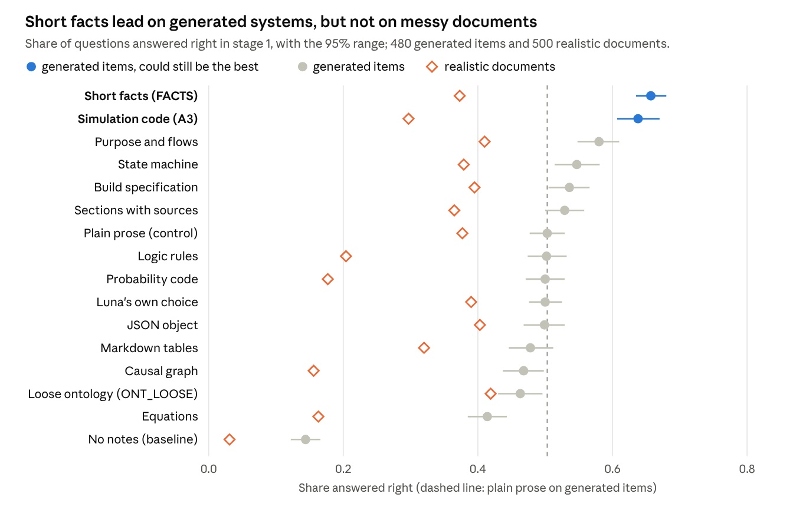
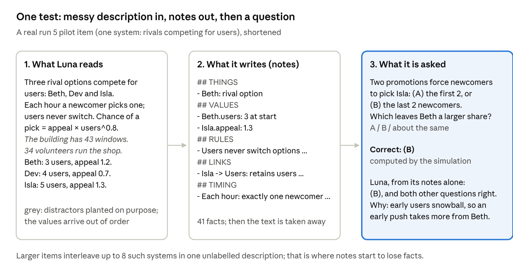
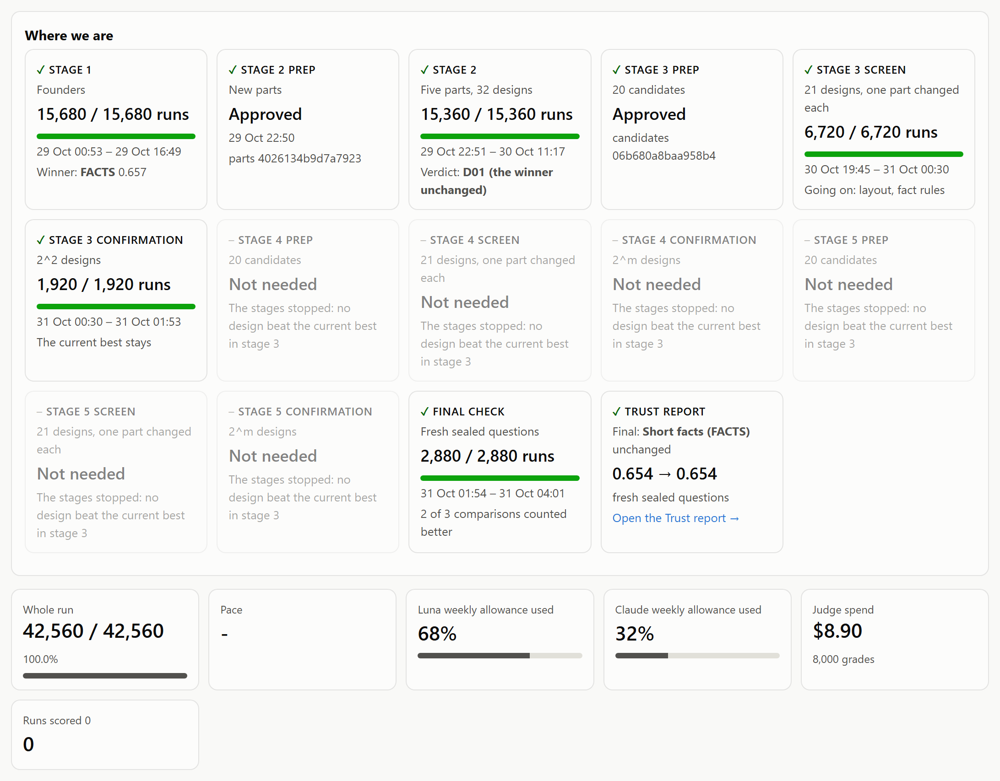
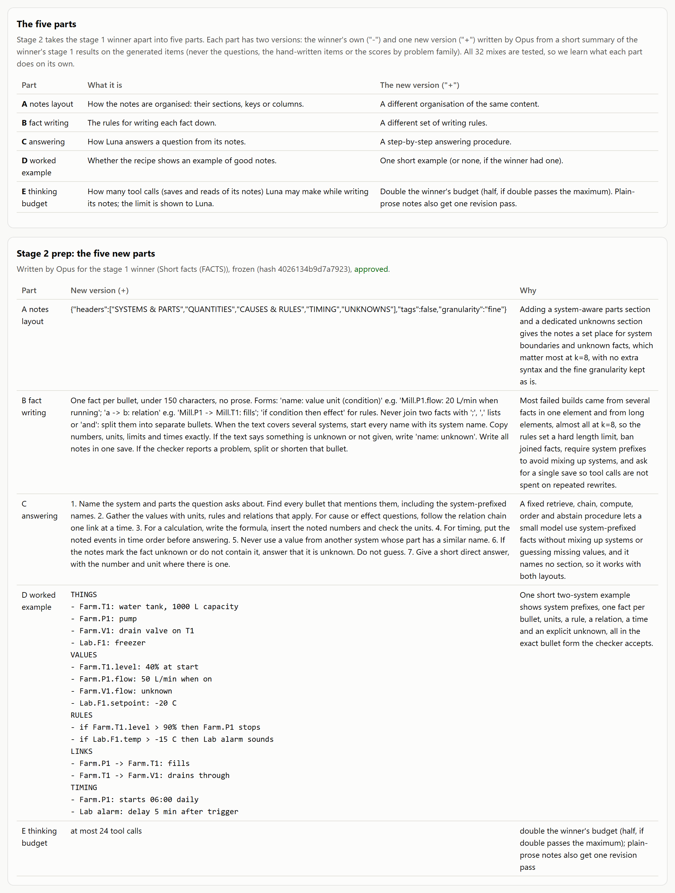
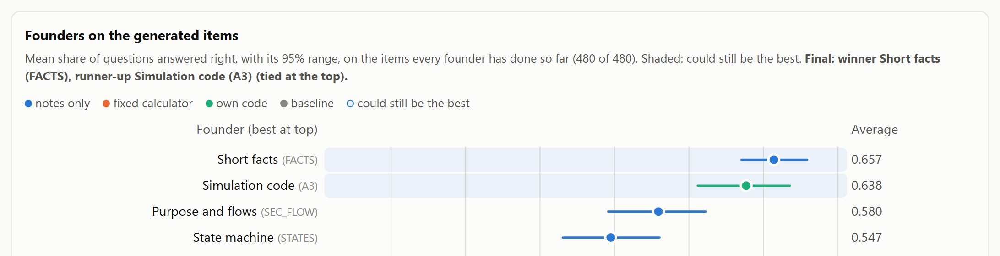
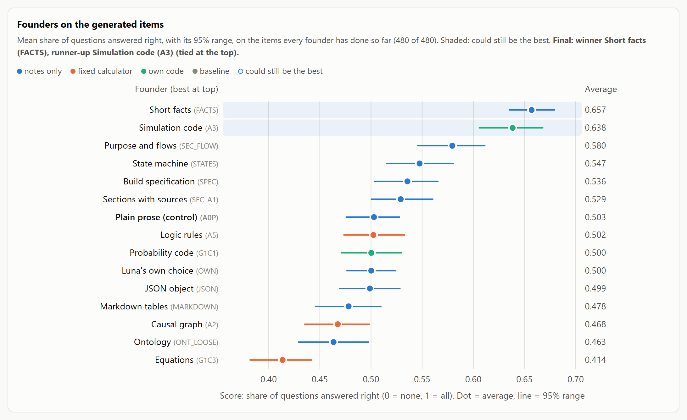
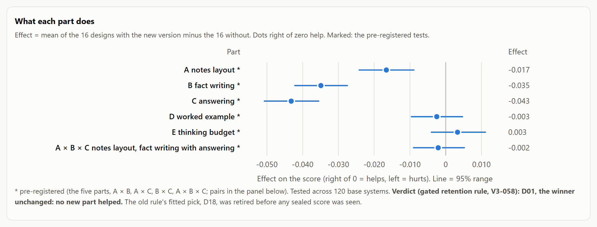
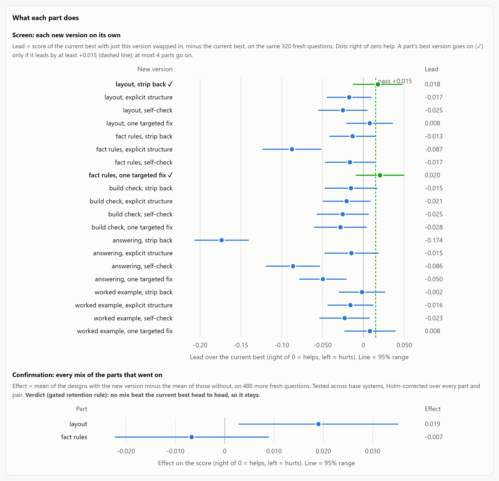
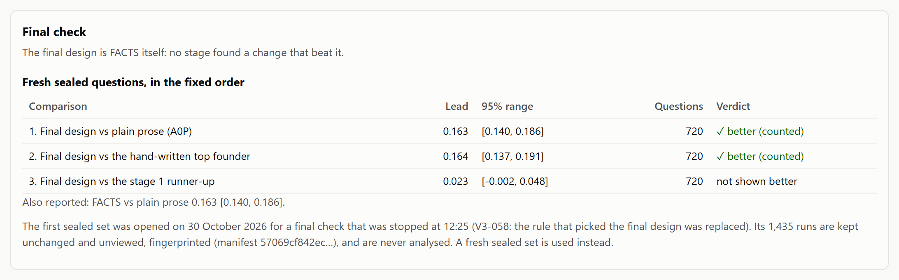
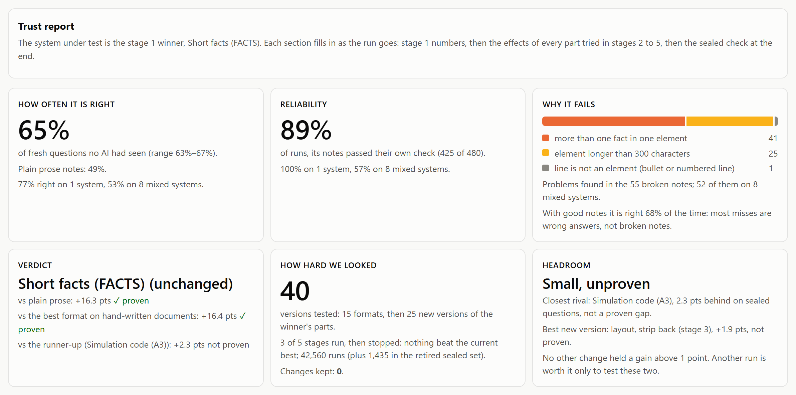

Summary
A small AI answers 65% of questions about a system correctly from short, plain facts it writes down, against 49% from plain prose notes, on 720 sealed items it had never seen. A designed experiment compared fifteen ways of writing a system down on one shared exam, took the winner apart to find which of its parts make it work, then tried 25 new versions of those parts. None beat the original. Every result was checked on fresh sealed items that no choice was made on, so we know how well the format works, where it fails, and that the obvious fixes make it worse.
The question. Before an AI can explain, troubleshoot or build a system, it needs an accurate picture of it: its parts, values, rules and timing. This experiment makes that picture explicit: the model writes the system down as notes, then answers from its notes alone. Frontier models are generally better at untangling messy descriptions but cost far more (GPT-6's flagship is about 100 times Luna's price per output token), and there is some evidence that smaller models are more sensitive to how information is laid out. Can the right format make a small model markedly more accurate, and which parts of a format make the difference?
What we did. We took fifteen formats from research and from tools AI already uses, from plain prose to JSON, Markdown tables, equations and simulations the model programs itself, and gave them all the same exam: 480 generated systems at four sizes and 500 realistic hand-written documents. A small model (GPT-6 Luna) sat every item with every format, end to end: it writes a system down without seeing the questions, then answers from its own notes alone. We then took the winning format apart into five parts, had a designer AI (Claude Opus) write one new version of each, and tested all 32 combinations (a 2⁵ full factorial) on the same items. A second round followed: Opus wrote 20 more versions from a summary of the first round, each was tried alone on fresh items, and the two most promising were tested in every combination. Every rule was fixed and hash-locked before it was used.

What we found.
The best format: short facts. Compact facts under five headings (FACTS) scored 0.657 on the generated items, 0.154 above plain prose notes (95% range, a paired cluster-bootstrap confidence interval: 0.127 to 0.182). Simulation code the model writes and runs (A3) came second at 0.638, too close to call.
What notes are worth. With no notes, answering from the question alone, the model scored 0.144. Plain notes lift that to 0.503 and short facts to 0.657: writing things down does most of the work, and the right format adds about a third more.
What makes the winner work: its plain parts. None of the 25 new versions beat the original. Three of the first five made it worse: a new layout (−0.017), stricter fact-writing rules (−0.035) and a new answering procedure (−0.043); a worked example and a bigger thinking budget changed nothing. In the second round only a simpler layout came close (+0.019), and it was not proven once three tests at once are allowed for (Holm's correction for multiple tests).
Complexity is the limit. On the sealed items, short facts answer 77% right on one system and 53% on eight mixed together; 52 of the 55 notes that broke their own format rules were on eight-system items. On the realistic hand-written documents no format did much better than plain prose: short facts scored 0.373 against 0.377, and the best, a loose ontology (ONT_LOOSE), 0.419.
The gains held on unseen items. On 720 sealed items, short facts beat plain prose by 0.163 (0.140 to 0.186) and the best format on hand-written documents by 0.164; its 0.023 lead over simulation code was not proven. The first sealed set was opened as first planned, then retired an hour later when the design was extended; its results were never looked at, analysed or reported, and a fresh sealed set was used (section 04).

Why it matters. When an AI works from its own notes, how the system is written down affects how well it can reason about it. A better format makes AI reasoning more reliable without a bigger model or any training, and it works in any chat AI today (Appendix A). The same notes could serve many wider uses, such as the specification an AI builds software from, or compact memory that lets an assistant carry a long conversation or project without losing track; these two are only examples. And the method outlasts the format: when models change, the same experiment can find the best format for the new one and explain why it is best. More broadly, the same machinery moves trust from the single answer to the whole system: instead of tracing one output inside one prompt, it measures how often a system stays within tolerance on cases it has never seen, and why it fails when it does.
Cost. Two consumer AI subscriptions and a few dollars of pay-per-use calls, on one workstation. The run is fully autonomous, 20 test runs at a time: 43,995 runs in all over 51 hours, about 38 of them running and the rest waiting for a person. It pauses for a person to approve each set of new parts before they are tested.
01The problem: an AI is only as good as its understanding
Most systems people want help with exist only as words. A hospital process, a farm, a supply chain or an app not yet built lives in documents, emails and rough specs. Whatever an AI is asked next, from a what-if to writing the software, it works from its own understanding of that description. If that understanding drops a rule, blurs a timing or merges two parts, every later answer inherits the mistake. When the AI works from notes rather than the original text, as in long conversations, handovers and memory, the notes are its understanding: whatever they leave out is gone.
The format of those notes is usually chosen by habit: plain prose, a bulleted spec, a JSON schema. Published work shows the choice matters: the same model can swing widely in accuracy with nothing changed but the format, and forcing rigid structure can hurt reasoning (He et al., 2025; Tam et al., 2024). As far as the author is aware, no earlier work has put the main families of formats through one exam on complex systems, explained why the winner wins, and tested the result on sealed items.
Small models are where format may matter most. Frontier models are generally better at reasoning through a messy description, but cost far more per call. The builder here, GPT-6 Luna, is the smallest and cheapest tier of the GPT-6 range: about 100 times cheaper per output token than the GPT-6 flagship. There is some evidence that smaller models are more sensitive to how information is laid out (He et al., 2025). This run tests whether a better format helps one small model; other small models are the next step (section 10).
Hypothesis. Some ways of writing a system down let a small, inexpensive model understand complex systems more accurately than plain-language notes, where understanding means answering questions about a system from its own written notes. The advantage can be traced to specific parts of the format, holds on unseen items and on realistic documents, and changes with the size of the system.
How understanding is measured. Understanding can only be scored against answers known to be right. So every test system is first built as a small simulation in code, and the description the AI reads is written from it, with the mess of real writing added on purpose: distractors, mixed units, varied wording, rules out of order. The AI writes its notes, the description is taken away, and it answers from the notes alone. Because the system was simulated, every correct answer is computed exactly, and no AI ever sees an answer key.

Only the notes cross from building to answering, so a design scores well only if what it writes down captures the system.

02The idea: one exam for every format, then take the winner apart
Rather than argue about the best format, we tested them side by side. Each way of writing a system down is a design with nine genes: how the notes are laid out, how they are built, how the model answers from them, worked examples and a few numeric budgets. Two designs with the same genes are the same design. Every design sits the same exam, so a hard item is hard for all of them and cancels out of every comparison.
| Gene | What it controls |
|---|---|
core | The layout of the notes: prose, named sections, state machine, equations, rules |
guidance | Free-text instructions on how to write the notes |
answering | Free-text instructions on how to answer questions from the notes |
build protocol | Order of work: one shot, step by step with checks, template first |
examples | Worked examples shown to the model |
schema, tools, query layer | Fields to declare, how build tools report errors, questions the notes can be asked through tools |
numeric | Budgets: turns, retries, how often to check |
Fifteen founders started the race, each one idea from published research or from formats AI tools already use. Three groups: notes only; notes plus a fixed calculator the model fills in; and notes the model programs itself, run in a sealed sandbox. A plain-language control, A0P, is the baseline every founder must beat, and a no-notes baseline shows how much can be answered without reading anything.
| Founder | The idea | Generated items | Hand-written |
|---|---|---|---|
Short facts (FACTS) | Compact key-value facts under five headings (Dai et al., 2024) | 0.657 | 0.373 |
Simulation code (A3) | A step-by-step simulation the model programs and runs in the sandbox | 0.638 | 0.297 |
Purpose and flows (SEC_FLOW) | Purpose, parts, flows, rules, timeline | 0.580 | 0.410 |
State machine (STATES) | A state machine: parts, states, events, transitions (Kim and Schuster, 2023) | 0.547 | 0.379 |
Build specification (SPEC) | An EARS (Easy Approach to Requirements Syntax) build spec: WHEN trigger, THE SYSTEM SHALL respond | 0.536 | 0.395 |
Sections with sources (SEC_A1) | Tagged bullets separating stated, derived and assumed facts | 0.529 | 0.365 |
Plain prose, the control (A0P) | Plain-language notes | 0.503 | 0.377 |
Logic rules (A5) | Facts and if-then rules a tool can query | 0.502 | 0.204 |
Probability code (G1C1) | A probabilistic program; a what-if is a re-run with new parameters | 0.500 | 0.177 |
Luna's own choice (OWN) | Luna's own choice: no format suggested | 0.500 | 0.390 |
JSON object (JSON) | One JSON object a program could read: things, quantities, links, events, rules, unknowns | 0.499 | 0.403 |
Markdown tables (MARKDOWN) | Markdown tables a person could scan: things, values, links, events | 0.478 | 0.320 |
Causal graph (A2) | A causal graph with signed edges; interventions traced by a tool | 0.468 | 0.156 |
Ontology (ONT_LOOSE) | Controlled-English fact sentences plus free notes | 0.463 | 0.419 |
Equations (G1C3) | Named variables and equations that tools compute (Gao et al., 2023) | 0.414 | 0.163 |
No notes, the baseline (BLIND) | No notes: answers from the question alone; never chosen | 0.144 | 0.031 |
Short facts led the generated items, 0.154 above plain prose (95% range 0.127 to 0.182). Only simulation code (A3) stays in the could-be-best set once luck among fifteen is allowed for, and three founders beat the control after Holm's correction: FACTS, A3 and purpose and flows (+0.077). The hand-written documents rank the founders differently: only the loose ontology beats plain prose there (+0.042, 0.016 to 0.068), and the two rankings barely agree (Spearman 0.22).
Three AIs, three jobs. A designer AI (Claude Opus) writes the new parts for the winner in stages 2 and 3, from the winner's recipe and a short summary of the results so far on the generated items; it never sees an item, a question or an answer key. A small model (GPT-6 Luna) builds notes and answers in every test, and is the only model scored. A grader (DeepSeek V4.1 Flash) marks the 500 hand-written items, whose answers are open prose; generated items are marked by script. Opus designs because writing new parts is the hardest reasoning job and it is never scored; DeepSeek grades because, in a test before the run, it agreed best with an Opus referee (0.92) at the lowest cost, and Opus re-grades 100 of its marks during the run as a check.

03How the experiment works
A deep scan first, then smaller stages that build on it, then one sealed check. Stages 1 and 2 are the deep scan: every format on one exam, then every part of the winner in every combination. They set the baseline that everything after is measured against. Stages 3 to 5 build out from it: each writes new versions from a summary of what the last stage found, screens them one at a time on fresh items, and tests the promising ones in every combination before anything replaces the current best. The engine runs unattended by locked rules and stops only for a person to approve each set of new versions.
Five steps.
Stage 1: founders (15,680 runs). The fifteen founders and the no-notes baseline each answer all 480 generated and 500 hand-written items. The winner and runner-up are the two highest means on the generated items.
Stage 2 prep: five new parts. The designer AI writes one new version of each of the winner's five parts: notes layout, fact writing, answering, worked example and thinking budget. Code checks that all 32 mixes work and differ; a person approves them.
Stage 2: five parts (15,360 runs). All 2 × 2 × 2 × 2 × 2 = 32 mixes of old and new parts answer the same 480 generated items, run fresh. Each new part is in exactly half the designs (a 2⁵ full factorial), so every run measures every part. A new part is kept only if its own effect is clearly positive and the new design then beats the old one head to head.
Stages 3 to 5: screen and confirm (at most three stages). The designer writes 20 new versions, four per part, from a summary of the last stage: one strips the part back, one adds explicit structure, one adds a self-check and one targets where the notes still fail. A person approves them. The screen tries each alone in the current best on 320 fresh items; a part's best version goes on if it leads by at least 0.015 (a fixed screening bar, not a significance test), at most four parts. The confirmation tests every mix of those on 480 more fresh items, under the same keep rule (Holm-corrected effects, then a paired head-to-head test). The stages stop as soon as nothing beats the current best.
Final check (2,880 runs). The final design, the plain-language control, the best founder on the hand-written items and the runner-up answer 720 fresh sealed items, opened once. The comparisons are asked in that order, and each counts only if every one before it passed.
The trust report. The run ends with a trust report, built from the records as the run goes and final after the sealed check. It answers four questions about the system under test: how often it gets it right, how reliable it is (by system size, and how often its notes pass their own check), why it fails (the checker's reasons for broken notes), and what to change (each new part's effect from stages 2 to 5). A last section shows the changes made and the score before and after, on the sealed items.

A run that fails because of the design (a forbidden tool call, running out of time) is retried twice and then scored 0, so a design cannot hide its failures. A run that fails because of the infrastructure halts the experiment until it is fixed, so nothing is ever quietly dropped.

No person or AI picks a winner. The winner, the runner-up and the final design are chosen by fixed rules in the analysis code, and the hand-written results are reported beside every choice but never used to make one. A new version replaces the current best only if its own effect is clearly positive across every design that has it and the new design then beats the old one head to head; a top observed score is never enough, because luck inflates it (section 04).

Figure 8 — Watching it run. The engine reports to a live dashboard that refreshes every second. Shown at the end of the run: a tile for each stage (runs done, when it ran, its key result), stages 4 and 5 marked not needed because the stages stopped, and the trust report; then the whole run's count and how much of each AI allowance was used.

Figure 9 — A design is its parts. The dashboard's stage 2 view: the five parts of the winning design, what each controls, and the new version written for it. Every mix of old and new parts is one of the 32 stage 2 designs.
04How we kept it honest
The best of many designs always looks better on the items used to pick it than it really is. This is the winner's curse, a name geneticists use because the first study to find a gene linked to a trait usually overstates its effect: it was the one study lucky enough to cross the bar, so repeat studies on new people find a smaller effect. Here the luck is which items a design happened to get, and fresh items from the same generator take it away. In this experiment it is built into the design: with fifteen founders and 32 stage 2 designs, the top score is always partly luck. Every safeguard below exists to tell real improvement from luck.
One exam for every design. All designs answer the same items, and every comparison is paired item by item, with a bootstrap that groups items by their base system, so item difficulty cancels out.
Luck among many is allowed for. A founder is ruled out of the could-be-best set only if it is further behind than luck among fifteen could make it (Hsu's comparisons with the best). Leads over the control are tested with Holm's correction, so the chance of any false "yes" stays at 5%.
A change must earn its place twice. Each part is measured on every design that has it against every design that does not. A new version is kept only if that effect is clearly positive after Holm's correction, and the new design must then beat the current best head to head. This rule replaced the planned "best predicted mix" rule after stage 2 (V3-058). The old rule would have picked a mix that rested on interaction terms, not on any part that helped.
A fixed control and a no-notes baseline. Every claim is measured against plain-language notes (A0P) on the same items; a baseline that answers from the question alone shows how much reading adds.
Locked rules. Hypotheses, rules, item sets, the hand-written item file and all code were written down and hash-locked before the first run. The engine refuses to run if a locked file changes; every change is a numbered, dated decision (V3-042 to V3-058). Two changed the design. Before stage 2 began, the designer's brief was extended to include a summary of stage 1 results (V3-056, V3-057). After stage 2, stages 3 to 5, the keep rule and a fresh sealed set were added (V3-058). Each was locked before it was used.
A sealed final check. 720 items stay unreadable by any AI until the last stage is complete; code opens them once, at the final check. The first sealed set was opened when stage 2 ended, as first planned. The run was paused an hour later to add stages 3 to 5, and that set was retired: its 1,435 runs were scored automatically but are kept unread: never looked at, analysed or reported (V3-058). A fresh set of 720, made by the same generator from unused seeds, served the final check.
The designer never sees what decides the result. Opus writes each set of new versions from the current best's recipe, the task and a short summary of results: scores by system size, why notes failed the layout check, how the build tools work and, from stage 3, what each earlier version did. It never sees items, question texts, answer keys or anything from the hand-written items.
Independent review. Before the lock, a frontier model from another lab (Gemini 4 Argon) reviewed the design once and the code seven times; every finding was fixed and tested, and the last two reviews found nothing to fix.

How much noise there is. In the pilot, the item-by-item difference between two designs had a standard deviation of 0.36. On the 480 main items that finds a lead of about 0.049 80% of the time; on the 720 sealed items, about 0.040. Each stage 2 part is measured across all 32 designs, so a part effect of about 0.014 is found 80% of the time. Smaller differences are reported, but not claimed.
The safeguards earned their keep before the first run. The pilots caught a text-encoding fault that had garbled characters in 412 of the 500 hand-written items (repaired exactly, before the lock), and a stage 2 instruction that let the designer choose section names the code refuses (fixed and retested). The lead held: short facts led plain prose by 0.154 on the stage 1 items and by 0.163 on the sealed ones, so the winner's curse took nothing measurable from it.

Figure 11 — Luck among fifteen, on the dashboard. The stage 1 chart at the end of stage 1: the founders whose ranges overlap the leader's stay shaded as could-be-best, because a gap that size could come from luck alone. Shown: the top of the chart; FACTS and A3 overlap, so both stay shaded.
05The run at a glance
The run found its winner in the first stage and could not improve it in the next two: short facts went to the sealed check unchanged, and its lead held. The table follows the run stage by stage, from the reader's side: what ran, what it found, and what the stage taught. Scores are the share of questions answered right on the generated items; leads are against the plain-language control unless the row says otherwise.
| Stage | Runs | When | What ran | Best design | Verdict | What we learnt |
|---|---|---|---|---|---|---|
Pilots | about 600 | 28–29 Oct | A format pilot (8 founders × 60 items) and a mini run of the whole pipeline on pilot items | – | Never used in results | Measured the noise behind the precision figures; caught an encoding fault and a stage 2 instruction gap before the lock |
1. Founders | 15,680 | 29 Oct, 00:52–16:58 | 15 founders and the no-notes baseline × 480 generated + 500 hand-written items | Short facts (FACTS), 0.657 | 3 of 14 beat the control (Holm): FACTS +0.154, A3 +0.136, SEC_FLOW +0.077; FACTS and A3 could both be best | Plain, structured notes win; programs and calculators mostly do not. On hand-written documents only the loose ontology beats prose |
Stage 2 prep | 0 | 29 Oct, 17:00–22:50 | Opus writes the five new parts for the winner; code checks them; a person approves | – | Approved on the third set: two were set aside while the designer's brief was corrected (V3-056, V3-057) | The brief must carry the evidence, or the designer guesses |
2. Five parts | 15,360 | 29 Oct 22:50 – 30 Oct 11:18 | All 32 mixes of old and new parts × 480 generated items | FACTS unchanged, 0.660 | New layout, fact rules and answering hurt (Holm); example and budget no effect; no pair helps | Adding text and structure to FACTS makes it worse |
Retired sealed set | 1,435 | 30 Oct, 11:18–12:25 | The first final check, stopped to add stages 3 to 5 | – | Retired, never used (V3-058) | – |
Stage 3 prep | 0 | 30 Oct, 19:31–19:44 | Opus writes 20 new versions from a summary of stage 2; code checks them; a person approves | – | Approved first time | Unprompted, the designer aimed its targeted fixes at the large-system failures |
3. Screen and confirm | 8,640 | 30 Oct 19:44 – 31 Oct 01:53 | 21 designs × 320 fresh items; then 4 mixes × 480 more | FACTS unchanged | 2 of 20 passed the screen; in confirmation the simpler layout gave +0.019, not proven after Holm; no mix beat FACTS, so the stages stop | Cutting text came closest; new answering procedures hurt most (down to −0.174) |
Final check | 2,880 | 31 Oct, 01:53–04:02 | FACTS, control, ONT_LOOSE, A3 × 720 sealed | FACTS, 0.654 | vs control +0.163 ✓; vs ONT_LOOSE +0.164 ✓; vs A3 +0.023, not shown | The lead over prose holds on unseen items |
Three patterns run through the stages. Simpler beat more: every change that added rules, steps or structure lowered the score, and the only near miss removed text. The weak spot never moved: every design lost most on eight-system items. And the keep rule mattered: the planned rule would have swapped in a mix that rested on interaction terms alone, while the gated rule kept FACTS, which then held on the sealed items.
The full record of every run, every design and every decision is published (Appendix B).
06What the experiment found
Short facts won because they are plain: five fixed headings, one short fact per line, and little else to follow. Stage 1 says which way of writing things down works best; stages 2 and 3 tried to improve it, part by part, and found that every addition made it worse or changed nothing.
Notes, calculators or code. The pre-registered contrast compares the three groups of founders: notes only, notes plus a fixed calculator, and notes the model programs itself.
| Group | Founders | Best in group | Group mean | Lead over the control |
|---|---|---|---|---|
Notes only | 10 | Short facts (FACTS), 0.657 | 0.529 | +0.026 |
Fixed calculator | 3 | Logic rules (A5), 0.502 | 0.461 | −0.042 |
Own code | 2 | Simulation code (A3), 0.638 | 0.569 | +0.067 |
No notes (baseline) | 1 | – | 0.144 | −0.359 |
The pre-registered contrast, notes only against the two tool groups together, favours notes only by 0.025 (0.008 to 0.042). Tools did not make up for what the notes missed.
What each part does. Read across: the effect of switching one of the winner's parts to its new version, averaged over the 16 designs that have it against the 16 that do not.
| Part | The new version | Effect (95% range) | Verdict (Holm) |
|---|---|---|---|
A Notes layout | Headings renamed for many systems, plus an UNKNOWNS section | −0.017 (−0.024 to −0.009) | Hurts |
B Fact writing | One fact per bullet under 150 characters, fixed forms, system name on every part, one save | −0.035 (−0.043 to −0.027) | Hurts |
C Answering | A seven-step procedure: find, chain, compute, order, never borrow across systems, say when unknown | −0.043 (−0.051 to −0.036) | Hurts |
D Worked example | A short two-system example in the exact form the checker accepts | −0.003 (−0.010 to 0.005) | No effect |
E Thinking budget | Twice the tool turns, 24 instead of 12 | +0.003 (−0.004 to 0.011) | No effect |
Pairs: A × B, A × C, B × C, A × B × C | −0.009, −0.009, −0.008, −0.002 | None passes |
Stage 3: twenty more tries. From a summary of stage 2, the designer wrote four new versions of each part: one that strips it back, one with explicit structure, one with a self-check and one targeted fix. Each was tried alone in FACTS on 320 fresh items.
| Part | Best of four in the screen | Lead | Result |
|---|---|---|---|
Notes layout | Strip back: coarser elements, rules and links merged | +0.018 | Went on; +0.019 in the confirmation, not proven after Holm |
Fact writing | Targeted fix: one explicit instruction to split joined facts | +0.020 | Went on; −0.007 in the confirmation |
Worked example | Targeted fix: an example mixing four systems | +0.008 | Below the 0.015 bar |
Build check | Strip back: one self-check before saving | −0.015 | None passed |
Answering | Explicit structure: small tables of the relevant parts | −0.015 | None passed; the strip-back version lost 0.174 |
In the confirmation, FACTS with the simpler layout scored 0.666 against 0.631 for FACTS unchanged on the same 480 items, but the layout's effect across the four designs was not proven once three tests are allowed for, so FACTS stayed and the stages stopped.

Figure 12 — Fifteen founders on one exam. The dashboard's stage 1 chart: each founder's mean on the generated items with its 95% range; shaded, the founders that could still be the best once luck among fifteen is allowed for.
What did not work.
| Design or part | What it tried | Result | Why it likely failed |
|---|---|---|---|
Equations, logic rules, causal graph (G1C3, A5, A2) | Notes plus a fixed calculator | 0.414 to 0.502, none above prose | The hard part is getting the facts down, not computing with them; each tool adds a step that can fail |
Simulation code (A3) on documents | A program the model writes and runs | Second on generated items (0.638), 0.297 on hand-written | Messy prose does not translate cleanly into code |
JSON and Markdown tables | Formats AI tools already use | 0.499 and 0.478, no better than prose | They cost the most output (6,534 and 7,443 tokens per item) without adding reasoning |
Stricter rules and longer procedures (stages 2 and 3) | More instructions for writing and answering | −0.035 and −0.043 in stage 2; down to −0.174 in stage 3 | Each instruction competes with the content for a small model's attention |
A bigger thinking budget (E) | Twice the tool turns | +0.003 | No build used more than half the original budget |
From founder to final design, the winner never changed. FACTS entered as one of fifteen founders: five headings, one fact per line. It won stage 1, survived 32 combinations of new parts in stage 2 and 20 more versions in stage 3, and went to the sealed check exactly as it started. The designer aimed most new versions at its known weak spot, large mixed systems, and none fixed it. What the run gives instead is a precise map: how often FACTS is right, where it fails, and which fixes do not work.

Figure 13 — What each part does. The dashboard's stage 2 chart: the effect of each of the five parts and their pairs, with 95% ranges; right of zero helps. Three parts hurt; none helps.

Figure 14 — Stage 3: twenty more tries. Top, the screen: each new version alone in FACTS on 320 fresh items, with the 0.015 bar dashed; two pass (✓). Bottom, the confirmation of those two on 480 more items: neither effect is proven, so FACTS stays.

Figure 15 — The final check. The dashboard's final check panel: each comparison on the fresh sealed items, in the fixed order, with its lead and 95% range, and the note on the retired first sealed set.
07Results
Short facts answer 65% of unseen questions right, against 49% from plain notes and 14% from no notes at all; the lead is largest on small systems, holds as they grow, and disappears on realistic documents.

Where the gains came from, by system size. Differences on the same items, in share of questions answered correctly.
| System size | Short facts vs plain notes (stage 1) | Short facts vs plain notes (sealed) | Short facts vs no notes (stage 1) |
|---|---|---|---|
1 subsystem | +0.203 | +0.198 | +0.494 |
2 subsystems | +0.167 | +0.156 | +0.556 |
4 subsystems | +0.132 | +0.155 | +0.539 |
8 subsystems | +0.115 | +0.144 | +0.465 |
Hand-written (500 items) | −0.004 | – | +0.342 |
All generated items | +0.154 | +0.163 | +0.513 |
The lead over plain notes is largest on one system (about 0.20) and narrows as systems grow, to 0.12 to 0.14 on eight; it never closes. Both formats lose ground with size: on the sealed items short facts fall from 0.77 on one system to 0.53 on eight. The notes themselves start to break there too: 52 of the 55 short-facts notes that failed their format check were on eight-system items.
On the hand-written documents. These 500 items are realistic operations documents, answered in open prose and marked by the AI grader on key points, with 0.1 off for each material error. Each asks one of six kinds of question: prediction, diagnosis, intervention, completeness, assumptions and consistency. Every founder scores lower here (0.16 to 0.42), and the ranking barely matches the generated items (Spearman 0.22, 95% range 0.08 to 0.46). Only the loose ontology beat plain prose (+0.042, Holm); short facts scored 0.373, level with prose at 0.377. Code-based founders fell furthest: simulation code dropped from second to eleventh (0.297). For messy documents, looser text formats do best.
Accuracy and cost.
| Design | Score | Notes that built correctly | Output tokens per item | of which writing notes | of which answering |
|---|---|---|---|---|---|
Final design = stage 1 winner (FACTS) | 0.657 | 425 of 480 (89%) | 4,913 | 3,425 | 1,487 |
Runner-up (A3) | 0.638 | 463 of 480 (96%) | 4,783 | 3,540 | 1,243 |
Plain notes (A0P) | 0.503 | no format check | 2,230 | 1,760 | 470 |
No notes (baseline) | 0.144 | – | 124 | – | 124 |
Short facts use 2.2 times the output of plain notes, about 2,700 more tokens per item: roughly $0.0013 more per item at the builder's API price (about $0.50 per million output tokens), for 15 more right answers in every 100. With notes that passed their check, short facts score 0.676. Notes that fail their format check are still answered from whatever was written, and accuracy on items whose notes built correctly is reported beside the overall score. The winner was chosen on accuracy alone, so any gain bought with extra tokens is visible here.
The final test on unseen items
Every number above, except the sealed column, comes from items the designs were chosen on, so it flatters the winner. The real verdict comes after the last stage: the final design is fixed by the analysis code, and the engine opens 720 sealed items that no AI or person has seen during the run. The comparisons were fixed before they were run, the set is opened once, and the questions are asked in order, so a mixed result is a legitimate result.
| Question | How it is tested | Result |
|---|---|---|
1. Does the final design beat plain notes on brand-new items? | Short facts against the control on the 720 sealed items; pass = the whole 95% range of its lead above zero | Yes: +0.163 (0.140 to 0.186); 0.654 against 0.491 |
2. Does it beat the best format for realistic documents? | Against the loose ontology (ONT_LOOSE), asked only if question 1 passed | Yes: +0.164 (0.137 to 0.191) |
3. Does it beat the runner-up? | Against simulation code (A3), asked only if question 2 passed | Not shown: +0.023 (−0.002 to 0.048) |
4. Does it beat the stage 1 winner? | Asked only if the final design differs from it | Not asked: no stage changed the winner |
The unseen items confirm the stage 1 picture almost exactly: short facts scored 0.657 on the stage 1 items and 0.654 on the sealed ones, and the lead over plain notes grew slightly. It is clearly better than prose and than the best format for messy documents, but not proven better than simulation code, which led it on two subsystems (0.733 against 0.688) and trailed on eight (0.473 against 0.533).

Figure 17 — The trust report. The top of the dashboard's trust report for the final design, six numbers at a glance: how often it is right on unseen questions, how reliable its notes are, why it fails, the verdict, how hard the engine looked, and the headroom left. Below it on the dashboard sit the detail, what to change, and the score before and after.
08What can be improved
The experiment answers its question for one small model on the items it used. How far that reaches is first tested by the final check (section 07); other models, memory and app building are next steps (section 10). The table sets out, area by area, what was tested, what was not, and what the next run should change. The last four rows come from what this run showed.
| Area | What this run tested | What it did not test, or did weakly | Opportunity |
|---|---|---|---|
Model | GPT-6 Luna only | Whether the winning format suits other models is left to a size-ladder run, a next step (section 10) | Run the final design unchanged on several small models |
Real documents | 500 hand-written items, AI-written in the style of operations documents from hidden simulators | Documents written by people about real systems | A set of real, anonymised operations documents with expert answer keys |
The judge | One judge model (DeepSeek v4.1 Flash), checked against Claude Opus on 100 answers (correlation 0.94) | Agreement with human graders | A human-graded sample of hand-written answers |
New versions of parts | One new version per part in stage 2 and four per part in stage 3, all by one designer (Claude Opus) | Whether other designers or bolder changes would do better; parts beyond these five | Several designers (Opus and Fable), several alternatives per part |
Thinking budget | Double the winner's turns as the alternative | No build used more than half the original budget, so the test was weak | Vary the budget on its own scale, at three or more levels |
Higher interactions | Five parts and ten pairs estimated; three-way and higher pooled as noise | Whether a three-way or higher combination matters | A replicated factorial around the final design |
Problem domain | Generated systems in seven families, 1 to 8 mixed together | Conversations, specifications, policies; any length limit on the notes | Problem packs for conversation memory and app specs; a length objective |
Item checks | Checks ran on text later found garbled by an encoding fault; the repair is exact | Whether a check on clean text would have accepted a few different items | Re-run the item checks on the repaired text |
Speed | 20 runs at a time on two subscriptions | 51 hours for the whole run, 38 of them running | More parallel runs, or pay-per-use calls at about $0.003 a run |
Item reuse | Stage 2 reused the 480 stage 1 items | Part effects measured on the items the winner was chosen on | Fresh items for every stage, as stages 3 to 5 used |
The runner-up | Short facts against simulation code on 720 sealed items | Whether the 0.023 gap is real | About 1,700 sealed items would settle a gap that size |
Messy documents | 500 hand-written items, scored for every founder | Why no format helps much on them | A deep scan of the looser text formats on documents alone |
Pre-registration | Stages 3 to 5 and the keep rule were added after stage 2, then locked (V3-058) | A run registered end to end before it starts | Register the deep scan and up to three screen-and-confirm stages from the start |
What we will not claim. That the winning format helps every model; that results on generated systems carry over in full to real ones; that the five parts tested are the only ones that matter; or that writing notes beats reading the description directly, since no design here answers with the description in front of it (adding one that does would test it). Each of these is testable, and the table says how.
A look inside the black box. Every run is kept with its notes, so the records form a large experiment on how a small model writes things down. A first look, from scores only: broken notes explain little of the loss. Short facts score 0.676 on items whose notes passed their check and 0.657 overall, so most wrong answers come from notes that look right. Which facts go missing, and whether the large-system loss happens in writing the notes or in using them, is left for a later analysis of the kept notes.
09Related work
Others have compared formats by hand, tuned prompts automatically and evolved programs; this experiment compares whole formats that the model writes before it sees any question, on one shared exam, and explains the winner part by part with a factorial design. As far as the author is aware, no earlier family of work does all of that, and three of the safeguards used here were not found in any of the work reviewed.
| What this experiment adds | Closest other work |
|---|---|
Fifteen whole formats on one exam, from prose to JSON, tables, rules and simulations | Manual comparisons render content at answer time (He et al., 2024; Sui et al., 2024) |
Notes written before the questions; answers from the notes alone | GraphRAG builds first, but with a fixed pipeline |
The winner explained part by part: all 32 mixes of five parts | Prompt optimisers and evolutionary search (OPRO, EvoPrompt, GEPA) find better prompts but do not measure what each part does |
Pre-registered, locked rules and a sealed final test | Only a protocol without results (Rosa et al., 2026) |
Accuracy measured as systems grow, from 1 to 8 subsystems | Not found in any family |
Choices made by fixed rules that allow for luck among many | Karpathy's autoresearch keeps an edit when one score improves: fast and simple, but on a noisy score it keeps luck as progress |
The full comparison, with sources, and a 17-feature checklist are in Appendix C.
10Conclusion and what comes next
Writing a system down as short, plain facts makes a small model markedly more accurate: 65% right on unseen questions, against 49% from plain prose. The hypothesis holds for generated systems: the format beats plain notes at every system size, and the gain held on 720 sealed items. Its strength lies in its plainness: every attempt to add rules, structure, examples or a bigger budget made it no better or worse. It does not hold for realistic documents, where no format did much better than prose and looser text formats did best. Above all, the run gives certainty: we know how well the format works, where it fails, and that the obvious fixes do not help.
What to do with it today.
| If you… | Do this |
|---|---|
Brief a small model about a system | Use the prompt card in Appendix A: five headings (things, values, rules, links, timing), one short fact per line, then answer from the notes alone |
Work with large or tangled systems | Keep each request small, build the system up in steps and check each step. Short facts answer 77% right on one system and 53% on eight mixed together. |
Need real-world reliability | On messy real-world documents no format here scored above 0.42: use a frontier model, or check the small model's answers. If you must use a small model, a looser text format did best. |
Want the best format for your own model | Run the method, not the format: the Reality Engine compares formats on one exam and explains the winner for whatever model and problem it is given (Appendix B) |
Want to know which part of a prompt matters | Use a factorial: vary the parts together in a balanced design, and every run measures every part at once |
The method may matter more than the format. Formats will date as models change. A repeatable, pre-registered way to find and prove the best one for any model will not. The engine has now been separated from this problem so it runs on others, as a general Reality Engine: a problem pack describes what a candidate is, how test cases are made and scored and what stays sealed; the loop stays the same (Appendix B).

What else the engine could be used for. Each use below is a different problem, needing its own problem pack and its own winning format.
| Use | What gets tested | How it is scored | Why it matters |
|---|---|---|---|
Specifications for AI builders | The spec format a small coding model builds software from | Hidden acceptance tests on the built app | Cheaper, more reliable AI software development |
Tolerance testing for AI systems | Any AI system that must meet a spec, together with its settings (prompts, tools, input format): for example an app-building system, a document processor or an agent pipeline | How often its output stays within a stated tolerance of the spec, on held-out cases; for an app builder, the share of hidden acceptance tests passed, misses split into spec misread and output broken | A measured, repeatable quality bar for AI systems, and a way to improve them by testing their settings the same way |
Memory for AI assistants and agents | The record format kept between turns and sessions | Questions answered correctly after many turns or sessions | Assistants that stop forgetting and contradicting themselves |
Policy and compliance | The structure rules and exceptions are written in | Correct yes or no on held-out rule questions | Fewer wrong answers where errors are costly |
Operations and digital twins | How a plant, fleet or supply chain is described | Correct "what happens if" answers against a simulator | Planning help from models cheap enough to run constantly |
Training scenarios and simulations | The format of a scenario's actors, states and events | Expert ratings of realism and fairness | Realistic practice cases at scale |
Small-model deployment | Instructions and examples for a fixed set of tasks | Accuracy against a larger model on held-out tasks | Large-model quality at small-model cost |
Education | How a concept is explained and structured | Students' or tutoring models' accuracy on new questions | Explanations that measurably work |
Next. Three questions follow from this run. Each needs a run of its own to answer well, and each is quick to set up as a new Reality Engine run, since the engine, the items and the final design carry over.
Other models (a size ladder). Does what works for Luna also help bigger models, in its own family and in Claude's? Plain notes, the stage 1 winner and the final design, read by Luna, a mid-size and the full model of its family, Codex, and Claude Haiku, Sonnet and Opus. The prediction, written down first: the gain over plain notes shrinks as models grow but stays above zero on descriptions of eight systems.
Memory. Can a small model keep a system straight from its notes over a conversation, with the notes updated as the system grows or compressed once? A free-form summary, the final design's format and a hand-made summary layout (request, facts, decisions, errors, open tasks), written by frontier models and read by Luna and Claude Haiku.
App building. Do apps built from the final design's format pass more hidden tests than apps built from an industry-standard spec or the prose brief, at similar lengths? Built by a small coding model, with full Codex and Claude Code as references.
A next experiment would also add the improvements in section 08: several designers (Opus and Fable) writing several alternatives per part, real operations documents with expert answer keys, and problem packs beyond generated systems, so the same engine can take on new problems unchanged.
A deep scan, then build out. This run set the pattern for future Reality Engine runs. The first run on a new problem does the deep scan, stages 1 and 2, because it forms a strong base for everything that follows. Up to three screen-and-confirm stages then build on it, each written from a summary of the last and tested on fresh items, until nothing beats the current best; one sealed check comes at the end. This keeps what evolution does well, building on changes that work, and adds what it lacks: every change is measured against the same design without it. A later run on a winner already mapped goes straight to screen and confirm.
Keeping it in check. On a real system the engine would run once in full, as a baseline, and then in small spot checks: a few hundred fresh items, spread across system sizes and problem types, compared item by item with the baseline, on a schedule or whenever the system changes (a new model version, prompt or data). With this run's noise, about 100 items catch a drop of 10 points and about 400 a drop of 5. A spot check whose range falls wholly below zero triggers a new full run to find what broke; when one component changes, a two-version test of just that component is enough. Each spot check uses fresh items so the system is never tuned to the check, and a sealed set is kept back for a rare full audit.
Appendix AThe winning format: use it yourself
The winning format is free to use. This appendix gives everything needed to use the final design with any chat AI: how it writes the notes, how it answers from them, a copy-paste prompt card, its genome and an example of its notes. The final design is short facts (FACTS, genome gd6f99b53eb9), exactly as it entered stage 1: no stage found a change worth keeping.
A.1 How to write the notes
The notes are five headed sections, THINGS, VALUES, RULES, LINKS and TIMING, each a list of one-line facts.
Write every fact as one short bullet in key-value form: 'name: value' (for example 'T1.level: 40% at start') or 'a -> b: relation' (for example 'P1 -> T1: fills').
One fact per bullet, no prose, no repetition.
Put each fact under the section it belongs to.
A tiny example of the layout:
## THINGS
- T1: water tank
- P1: pump
## VALUES
- T1.level: 40% at start
- P1.flow: 50 L/min when on
## RULES
- if T1.level > 90% then P1 stops
## LINKS
- P1 -> T1: fills
## TIMING
- P1: starts 06:00 dailyA.2 How to answer from the notes
Short facts have no answering procedure of their own: the model is given the question and its notes, and nothing else. Stages 2 and 3 showed that adding one makes it worse, so the card keeps it that way. The whole instruction is:
Answer the question using only these notes. If the notes do not contain what you need, say so.What matters most, from stages 2 and 3, is to keep it short. Stricter writing rules cost 0.035 and a step-by-step answering procedure 0.043; a worked example and a bigger budget changed nothing. The one change that came close removed text: coarser lines, with rules and links merged (+0.019, not proven).
A.3 The prompt card: copy and paste
Use it in two messages. Message 1 builds the notes; message 2, in a fresh chat with only the notes, asks the questions.
MESSAGE 1 (build the notes)
Read the description below. Write notes about the system under five headings:
THINGS, VALUES, RULES, LINKS, TIMING.
Write every fact as one short bullet in key-value form: 'name: value'
(for example 'T1.level: 40% at start') or 'a -> b: relation'
(for example 'P1 -> T1: fills'). One fact per bullet, no prose, no repetition.
Put each fact under the section it belongs to. Output only the notes.
[paste the description here]
MESSAGE 2 (in a fresh chat: answer from the notes)
Here are notes about a system. Answer the question using only these notes.
If the notes do not contain what you need, say so.
[paste the notes]
Question: [your question]In the experiment the builder also had tools that check the document and list problems by line number; the card above is the no-tools version for any chat AI.
A.4 The genome
The final design's genome, exactly as the engine ran it (FACTS, gd6f99b53eb9):
{
"core": {"kind": "sectioned", "params": {"headers": ["THINGS", "VALUES", "RULES", "LINKS", "TIMING"], "tags": false, "granularity": "fine"}},
"schema": {"fields": []},
"build_protocol": {"kind": "one_shot", "params": {}},
"tool_interface": {"errors": "first_only", "submit": "tool_arg", "patch": true},
"query_layer": [],
"guidance": {"text": "Write every fact as one short bullet in key-value form: 'name: value' (for example 'T1.level: 40% at start') or 'a -> b: relation' (for example 'P1 -> T1: fills'). One fact per bullet, no prose, no repetition. Put each fact under the section it belongs to.", "examples": []},
"numeric": {"max_turns": 12, "retries": 2, "check_every": 1, "samples": 50, "tolerance": 0.05},
"examples": {"items": []},
"answering": {"text": ""}
}A.5 How it writes
An excerpt of notes the final design wrote on a pilot item that is not in any test set (one system; the notes passed their check):
## THINGS
- Piglets: a quantity measured in piglets.
- Grain: a quantity measured in tonnes of grain.
- Milk: a quantity measured in litres of milk.
## VALUES
- Piglets at time 0: 47 piglets.
- Grain at time 0: 12 tonnes.
- Simulation end time: 30 days.
## RULES
- Milk rate of change per day: 0.01 × grain × milk − 0.2 × milk.
- Piglets, grain, and milk cannot fall below zero.
## LINKS
- Grain and milk -> milk rate: interaction increases milk by 0.01 × grain × milk.
- Milk -> milk rate: milk decreases by 0.2 × milk.
## TIMING
- Reported levels: once per day.Appendix BThe data and the code
Two repositories go with this paper: one holds the details of this run, the other holds the engine, to run the same method on your own problem.
| Repository | What it holds | Use it to |
|---|---|---|
One row per test episode; every design's genome, the new parts with the designer's reasons; the analysis of every stage with 95% ranges; the pre-registration, the lock and the dated decision log | Check every result in this paper | |
The engine: the stages, the statistics, the keep rule, the sealed final check and the trust report. This run as its first problem pack, with the code that ran it. A toy problem that runs every step with no model, in seconds | Run the method on your own problem |
Rerun through the engine from its saved records, this run's analysis comes out the same: all 712 numbers. No item text, answer key or sealed material appears in this paper or either repository. The generator that made the systems is not published, so the sealed sets can't be rebuilt; the 500 hand-written items are kept back for future runs.
Appendix CRelated work in detail
The full comparison behind section 09: each family of related work, with example studies, what it optimises and how this experiment differs, then a checklist of 17 features.
| Approach | Example work | What it optimises | Small-model evidence | Held-out test | Transfer across models | How this experiment differs |
|---|---|---|---|---|---|---|
Manual format comparison | How content is rendered at answer time | GPT-3.5 vs GPT-4 only | Partial | Template overlap only | Uses their findings as founders, then searches beyond them | |
Automatic prompt optimisation | APE Zhou et al., 2022; OPRO Yang et al., 2023; ProTeGi Pryzant et al., 2023; TextGrad Yuksekgonul et al., 2024 | An answer-time instruction | Mostly large API models | Partial | Not as an unchanged winner | Optimises a whole format, and the format never sees the questions |
Evolutionary prompt and program search | EvoPrompt Guo et al., 2023; Promptbreeder Fernando et al., 2024; GEPA Agrawal et al., 2025; FunSearch Romera-Paredes et al., 2024; AlphaEvolve Novikov et al., 2025 | Prompts, mutation prompts or programs | Yes: 3.5B to 8B models | Partial | No | Closest search mechanics; the candidates here are question-blind descriptions of a system |
Autonomous research loops | autoresearch (Karpathy, 2026) | A training script: an agent edits it, runs a 5-minute job, keeps the edit if validation loss improves | Yes: small models trained on one GPU | No: one validation score | Partly: changes found on a small model trained a larger one about 11% faster (as reported) | One line of descent on a near-repeatable score; this score is noisy, so a population is kept and every lead is proven on fresh items |
Pipeline optimisation | DSPy Khattab et al., 2023; MIPRO Opsahl-Ong et al., 2024 | Modules, instructions and examples of a pipeline | Yes: Llama 8B to 13B | Partial | No | Here the answer step sees only the written notes, so any gain comes from what was written down and how it is read back |
Learned prompts and compression | Prefix-Tuning Li and Liang, 2021; LLMLingua-2 Pan et al., 2024 | Model-internal vectors or a compressed copy of the context | Small compressors only | Partial | Compressor only | Produces a readable, portable format any model can use, with no training |
Structured knowledge and code | GraphRAG Edge et al., 2024; PAL Gao et al., 2022 | Graphs, structured-data interfaces, programs | Not tested | Partial | No | GraphRAG builds before questions with a fixed pipeline; here the representation itself is searched |
Agent memory | MemGPT Packer et al., 2024; Zep Rasmussen et al., 2025 | Memory tiers, retrieval | Hosted small variants only | Yes, not sealed | No | Memory systems change storage, retrieval and answering together; here the format is isolated |
Spec-driven development | Specine Tian and Chen, 2026; Kiro and Spec Kit | Requirements, designs, tests | No size comparison | Partial | No | Supplied the SPEC founder; measured on code, not on understanding a system |
Fine-tuning | Supervised fine-tuning | Model weights | Yes | Usually | No | Needs training data and model access; the result here is a format any model can use |
This experiment | This paper | Whole note formats written before any question; then the winner's five parts in a full factorial | GPT-6 Luna | A sealed final check after a lock | Next step: the final design unchanged on other models (section 10) | The reference row |
Feature checklist. Each column is one family of related work from the table above; the last column is this experiment. ✓ = yes, ~ = partly or only in some studies, ✗ = no or not reported.
| Feature | Manual formats | Prompt optimisers | Evolutionary prompts | Autoresearch loop | Pipelines | Learned and compressed | Structured / GraphRAG | Agent memory | Spec-driven | Fine-tuning | This experiment |
|---|---|---|---|---|---|---|---|---|---|---|---|
Searches automatically for better designs | ✗ | ✓ | ✓ | ✓ | ✓ | ✓ | ✗ | ✗ | ✗ | ✓ | ~ |
Population of candidates (evolution) | ✗ | ✗ | ✓ | ✗ | ✗ | ✗ | ✗ | ✗ | ✗ | ✗ | ✗ |
AI proposes fixes from failures | ✗ | ✓ | ✓ | ✓ | ~ | ✗ | ✗ | ✗ | ~ | ✗ | ✗ |
Combines strong candidates | ✗ | ✗ | ✓ | ✗ | ~ | ✗ | ✗ | ✗ | ✗ | ✗ | ~ |
Optimises structure, not just wording | ~ | ✗ | ~ | ~ | ~ | ✗ | ✗ | ✗ | ✗ | ✗ | ✓ |
Representation written before the questions | ✗ | ✗ | ✗ | ✗ | ✗ | ✗ | ~ | ~ | ✓ | ✗ | ✓ |
Answers from the representation alone | ✗ | ✗ | ✗ | ✗ | ✗ | ✗ | ✗ | ✗ | ~ | ✗ | ✓ |
Readable, portable result (no training) | ✓ | ✓ | ✓ | ~ | ~ | ~ | ~ | ~ | ✓ | ✗ | ✓ |
Tested on small or open models | ~ | ~ | ✓ | ✓ | ✓ | ~ | ✗ | ~ | ~ | ✓ | ✓ |
Held-out test set | ~ | ~ | ~ | ✗ | ~ | ~ | ~ | ~ | ~ | ✓ | ✓ |
Fresh confirmation of the winner | ✗ | ✗ | ✗ | ✗ | ✗ | ✗ | ✗ | ✗ | ✗ | ✗ | ✓ |
Sealed final test after a lock | ✗ | ✗ | ✗ | ✗ | ✗ | ✗ | ✗ | ✗ | ✗ | ✗ | ✓ |
Pre-registered rules | ✗ | ✗ | ✗ | ✗ | ✗ | ✗ | ✗ | ✗ | ~ | ✗ | ✓ |
Winner tested unchanged on other models | ~ | ✗ | ✗ | ~ | ✗ | ~ | ✗ | ✗ | ✗ | ✗ | ~ |
Retention over a multi-turn build-up | ✗ | ✗ | ✗ | ✗ | ✗ | ✗ | ✗ | ✓ | ~ | ✗ | ~ |
System size varied (complexity ladder) | ✗ | ✗ | ✗ | ✗ | ✗ | ✗ | ✗ | ✗ | ✗ | ✗ | ✓ |
Winner explained part by part | ✗ | ✗ | ~ | ~ | ✗ | ✗ | ✗ | ✗ | ✗ | ✗ | ✓ |
Ratings summarise the studies cited for each family; the autoresearch column is rated from its repository's description. Among the work reviewed, no family has every feature, and three (a sealed final after a lock, a complexity ladder, the winner explained part by part) were not found in any of them; the only pre-registration found is a study protocol without results yet (Rosa et al., 2026). Two of this experiment's partial ticks (transfer to other models, multi-turn retention) are next steps in section 10.